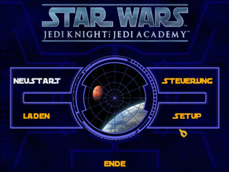
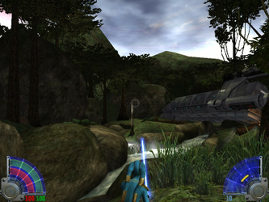

Star Wars Jedi Knight III - Jedi Academy
Dieser Artikel wurde für die folgenden Ubuntu-Versionen getestet:
Ubuntu 16.04 Xenial Xerus
Ubuntu 14.04 Trusty Tahr
Zum Verständnis dieses Artikels sind folgende Seiten hilfreich:
Star Wars: Jedi Knight - Jedi Academy. Man beginnt ein Training als Padawan an der Jedi-Akademie, um die Wege der Macht zu erlernen. Die Reihenfolge der Missionen auf den unterschiedlichen Planeten können frei gewählt werden. Man muss sich entscheiden, ob man sich der hellen oder der dunklen Seite der Macht anschließen will...
Der Vorgänger Star Wars Jedi Knight II - Jedi Outcast ist ebenfalls unter Linux spielbar.
|  |  |
| Hauptmenü | Spielszene |
Vorbereitung¶
Zur Vorbereitung werden die folgenden Pakete benötigt [1]:
32-bit¶
libsdl2-2.0-0
libopenal1
zlib1g-dev
 mit apturl
mit apturl
Paketliste zum Kopieren:
sudo apt-get install libsdl2-2.0-0 libopenal1 zlib1g-dev
sudo aptitude install libsdl2-2.0-0 libopenal1 zlib1g-dev
64-bit¶
ia32-libs
libxxf86dga1:i386
zlib1g-dev:i386
libsdl2-2.0-0:i386
libopenal1:i386
libgl1-mesa-glx:i386
mit apturl
Paketliste zum Kopieren:
sudo apt-get install ia32-libs libxxf86dga1:i386 zlib1g-dev:i386 libsdl2-2.0-0:i386 libopenal1:i386 libgl1-mesa-glx:i386
sudo aptitude install ia32-libs libxxf86dga1:i386 zlib1g-dev:i386 libsdl2-2.0-0:i386 libopenal1:i386 libgl1-mesa-glx:i386
Installation¶
Wine¶
Nachdem man Star Wars Jedi Knight: Jedi Academy unter Wine installiert [2] hat, spielt man den Patch JKAcademy1_01.exe, den man von gamefront.com 
 heruterladen kann, ein. Nun in das Installationsverzeichnis wechseln und den Ordner base in einen neuen Ordner kopieren (z.B. nach ~/Spiele/swjk3).
heruterladen kann, ein. Nun in das Installationsverzeichnis wechseln und den Ordner base in einen neuen Ordner kopieren (z.B. nach ~/Spiele/swjk3).
Quellcode¶
Zum Erstellen des Programms aus dem Quellcode einen Ordner jk3 im Homeverzeichnis anlegen und in diesen wechseln. Nun von GitHub den Quellcode mittels Git herunterladen und kompilieren [3][4]:
mkdir ~/jk3 cd ~/jk3 git clone git://github.com/xLAva/JediAcademyLinux.git mkdir build && cd build cmake ~/jk3/JediAcademyLinux/code make
Die kompilierten Dateien jasp und jagamex86.so nach ~/Spiele/swjk3 verschieben. Über jasp kann das Spiel gestartet [5] werden - sofern die Ausführrechte [6] gesetzt worden sind. Auf Wunsch einen Menüeintrag vornehmen [7].

Infobox¶
| Star Wars: Jedi Knight - Jedi Academy | |
| Genre: | Ego-Shooter |
| Sprache: |  |
| Veröffentlichung: | 2003 |
| Entwickler: | Raven Software |
| Systemvoraussetzungen: | 350 MHz Prozessor / 128MB RAM / 16MB+ Grafikkartevon |
| Medien: | Download / CD (2) |
| Strichcode / EAN / GTIN: | 5030917020957 |
| Läuft mit: | nativ |
- Erstellt mit Inyoka
-
 2004 – 2017 ubuntuusers.de • Einige Rechte vorbehalten
2004 – 2017 ubuntuusers.de • Einige Rechte vorbehalten
Lizenz • Kontakt • Datenschutz • Impressum • Serverstatus -
Serverhousing gespendet von